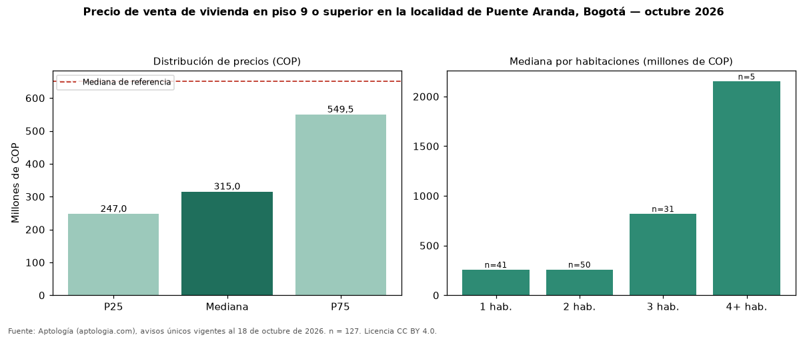

Precio de venta de vivienda en piso 9 o superior en la localidad de Puente Aranda, Bogotá — octubre 2026
Con 127 avisos únicos, el precio mediano de vivienda en piso 9 o superior en venta en la localidad de Puente Aranda, Bogotá es COP 315 millones. Eso es 52 % menos que la mediana de toda la oferta de venta en la localidad de Puente Aranda, Bogotá (COP 650 millones). En todo Bogotá, la misma combinación tiene mediana COP 600 millones (−48 %). Por metro cuadrado, la mediana es COP 7.799.498/m² (+45 % frente a COP 5.385.735/m²), puesto 7 de 14 localidades comparables. Cruzando con la oferta de arriendo equivalente, la rentabilidad bruta implícita es 7,3 % anual. El rango intercuartílico va de COP 247 millones a COP 550 millones (razón 2,2). Por habitaciones: 1 habitación, COP 257 millones (n = 41); 2 habitaciones, COP 258 millones (n = 50); 3 habitaciones, COP 819 millones (n = 31); 4 o más habitaciones, COP 2,15 mil millones (n = 5). Datos abiertos CC BY 4.0 de Aptología; fuente y búsqueda de inmuebles: https://www.aptologia.com/venta/bogota/puente-aranda. Archivos: PDF de 2 páginas, CSV con las cifras y gráfica PNG.

| Avisos únicos | 127 |
|---|---|
| Percentil 25 | COP 247.000.000 |
| Mediana | COP 315.000.000 |
| Percentil 75 | COP 549.500.000 |
| Mediana por m² | COP 7.799.497 |
Fuente: avisos vigentes de portales inmobiliarios recopilados por Aptología, deduplicados (mínimo 30 avisos únicos por celda). Precios pedidos, no cerrados. Fecha: 2026-10-18.